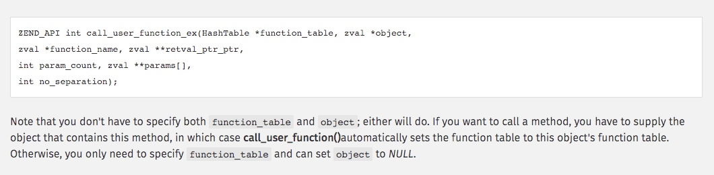
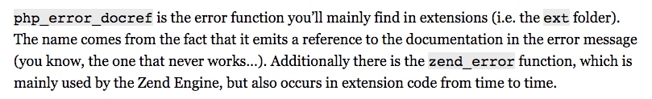

项目地址：https://github.com/liqiongfan/xaop
思路: hook掉php执行函数的方法(zend_execute_ex)，然后使用call_user_function调用自定义的回调函数
文件和作用
Xaop操作类的所有方法：kernel/xaop.c
Xaop操作类会使用的宏，比如解析和检查方法的参数：kernel/xaop.h
扩展调用php函数的函数：kernel/helper.c 和 kernel/helper.h
替换php的zend_execution_ex: kernel/exec.c 和 kernel/exec.c
解析用户编写的annotation的相关逻辑：kernel/parsing.c 和 kernel/parsing.h
全局变量定义在: php_xaop.h
全局工具类zend_class_entry的声明*annotation_ce, *doc_ce, *xaop_ce：kernel/classes.c
检查参数是否合法
#define CHECK_PARAM() do {\
if ( Z_TYPE_P(class_name) != IS_STRING && Z_TYPE_P(class_name) != IS_NULL ) { \
php_error_docref(NULL, E_ERROR, "First argument need to be a valid class name or NULL");\
return ;\
}\
if ( ZSTR_LEN(function_name) && '*' == ZSTR_VAL(function_name)[0] ) { \
php_error_docref(NULL, E_ERROR, "Function name mustn't be `*`.");\
return ;\
}\
if ( !zend_is_callable(aop, IS_CALLABLE_CHECK_NO_ACCESS, NULL) ) {\
php_error_docref(NULL, E_ERROR, "Third argument is expected to be a valid callback");\
return ;\
}\
} while(0)
解析用户传递进来的参数
#define SAVE_PARAMS_ZPP() ZEND_PARSE_PARAMETERS_START(3, 3)\
Z_PARAM_ZVAL(class_name)\
Z_PARAM_STR(function_name)\
Z_PARAM_ZVAL(aop)\
ZEND_PARSE_PARAMETERS_END()
#define SAVE_PARAMS_OLD() if (zend_parse_parameters(ZEND_NUM_ARGS() TSRMLS_CC, "zSz", &class_name, &function_name, &aop) == FAILURE ) { \
return ; \
}
在请求初始化事件中进行替换php的zend_execute_ex
PHP_RINIT_FUNCTION(xaop)
{
#if defined(COMPILE_DL_XAOP) && defined(ZTS)
ZEND_TSRMLS_CACHE_UPDATE();
#endif
/** After INI config read already, to init the kernel aop handler */
switch ( XAOP_G(aop_mode) ) {
case ANNOTATION_AOP:
zend_execute_ex = xaop_annotation_ex;
break;
case INJECTION_AOP:
zend_execute_ex = xaop_injection_ex;
zend_execute_internal = xaop_injection_internal_ex;
break;
}
XAOP_G(overloaded) = 0;
XAOP_G(around_mode) = 0;
array_init(&XAOP_G(di));
/* Init all injection aop */
array_init(&XAOP_G(before_aops));
array_init(&XAOP_G(after_aops));
array_init(&XAOP_G(after_return_aops));
array_init(&XAOP_G(after_throw_aops));
array_init(&XAOP_G(around_aops));
array_init(&XAOP_G(property_aops));
return SUCCESS;
}
可以看到如果使用代码方式使用切面，不仅替换了用于执行用户定义的函数的zend_execute_ex指针，同时也替换了用于执行系统函数的xaop_injection_internal_ex指针
替换zend_execute_ex指针后，执行函数时就会调用这个替换的函数指针进行执行了，这样就方便进行hook了
在模块初始化中声明了全局工具类Xaop
// -> xaop.c
PHP_MINIT_FUNCTION(xaop)
{
ZEND_INIT_MODULE_GLOBALS(xaop, php_xaop_init_globals, NULL);
REGISTER_INI_ENTRIES();
/* If you have INI entries, uncomment these lines */
le_xaop = zend_register_list_destructors_ex(NULL, NULL, "XaopExec", module_number);
std_object_handlers.write_property = xaop_property_aop_ex;
std_object_handlers.read_property = xaop_read_property_aop_ex;
annotation_init();
doc_init();
xaop_init();
return SUCCESS;
}
xaop_init对应代码如下：
// -> kernel/xaop.c
// xaop_init()
XAOP_INIT(xaop)
{
zend_class_entry ce;
INIT_CLASS_ENTRY(ce, "Xaop", xaop_functions);
xaop_ce = zend_register_internal_class(&ce);
xaop_ce->ce_flags |= ZEND_ACC_FINAL;
}/*}}}*/
同时在PHP_MINIT_FUNCTION(xaop)中对属性进行了hook
std_object_handlers.write_property = xaop_property_aop_ex;
std_object_handlers.read_property = xaop_read_property_aop_ex;
从用户空间调用execute_ex
kernel/xaop.c
XAOP_METHOD(Xaop, exec)
{
zval *xaop_exec;
if ( zend_parse_parameters(ZEND_NUM_ARGS() TSRMLS_CC, "r", &xaop_exec) == FAILURE ) {
return ;
}
zend_execute_data *exec = (zend_execute_data *)zend_fetch_resource( Z_RES_P(xaop_exec), "XaopExec", le_xaop);
if ( exec ) {
if ( exec->func->type == ZEND_USER_FUNCTION ) {
exec->return_value = return_value;
execute_ex( exec );
} else if ( exec->func->type == ZEND_INTERNAL_FUNCTION ) {
execute_internal(exec, return_value);
}
}
}/*}}}*/
可以看到这里可以通过exec的exec->func->type获取到被调用的函数的类型
- 调用用户定义的函数, type是ZEND_USER_FUNCTION
- 调用系统定义的函数, type是ZEND_INTERNAL_FUNCTION
XAOP_METHOD(Xaop, addBeforeAop)
XAOP_METHOD(Xaop, addBeforeAop)
{
DCL_PARAMS
#ifdef FAST_ZPP
SAVE_PARAMS_ZPP();
#else
SAVE_PARAMS_OLD();
#endif
CHECK_PARAM();
zval retval;
array_init(&retval);
/**
* [ class = 'Tag', func = 'getList', aop = (zval *) ]
*/
add_assoc_zval(&retval, "class", class_name);
add_assoc_str(&retval, "func", function_name);
Z_TRY_ADDREF_P(aop);
add_assoc_zval(&retval, "aop", aop);
add_next_index_zval(&XAOP_G(before_aops), &retval);
}/*}}}*/
这个方法接收三个参数，分别是类名class，字符串、函数名func，字符串、回调函数aop，类型为回调函数
这个方法一共使用了三个宏: DCL_PARAMS、SAVE_PARAMS_ZPP、CHECK_PARAM
add_next_index_zval 参考：http://php.theraven7.com/manual/pt_BR/zend-api.add-next-index-zval.php
DCL_PARAMS，位于：kernel/xaop.h
#define DCL_PARAMS zval *class_name, *aop; zend_string *function_name;
可以看到这个宏的作用是定义了三个变量，类型为zval的class_name和aop，类型为字符串的function_name
SAVE_PARAMS_ZPP，位于：kernel/xaop.h
#define SAVE_PARAMS_ZPP() ZEND_PARSE_PARAMETERS_START(3, 3)\
Z_PARAM_ZVAL(class_name)\
Z_PARAM_STR(function_name)\
Z_PARAM_ZVAL(aop)\
ZEND_PARSE_PARAMETERS_END()
php7以后的解析扩展函数用户传进来的参数的方式，相比7以前的代码，这种方式更简化了
SAVE_PARAMS_OLD，位于：kernel/xaop.h
#define SAVE_PARAMS_OLD() if (zend_parse_parameters(ZEND_NUM_ARGS() TSRMLS_CC, "zSz", &class_name, &function_name, &aop) == FAILURE ) { \
return ; \
}
php7以前的解析扩展函数用户传进来的参数的方式，相比7以前的代码
全局变量
ZEND_BEGIN_MODULE_GLOBALS(xaop)
zval di; /* Di container */
int aspect; /* Aspect mode or not, 1 for aspect 0 for not. */
int overloaded; /* overload mode or not 1: overload 0: normal */
int aop_mode; /* The AOP mode for kernel use. 1: normal 2:annotation aop 3: method aop */
char *method_prefix; /* The AOP method start with will be excluded */
int property_aop; /* The AOP about the property 1: disable 2 on */
zval property_aops; /* The property aop when property occur */
zval before_aops; /* The before aop */
zval after_aops; /* The after aop */
zval after_return_aops; /* The after_return aop */
zval after_throw_aops; /* The after_throw aop */
zval around_aops; /* The around_aop */
int around_mode; /* In around aop mode */
ZEND_END_MODULE_GLOBALS(xaop)
可以看到这个全局变量里除了基础类型，全部都是zval结构体类型，后面在操作这些zval类型的变量时就可以使用php提供的大量内置的宏了
before_aops存放方法或者函数被调用前的回调函数
after_aops存放方法或者函数被调用后的回调函数
after_return_aops存放方法或者函数被调用后的回调函数(方法或者函数返回值不为null才会触发)
after_throw_aops存放方法或者函数被调用后跑出了异常的回调函数
全局变量的初始化
通过调用ZEND_INIT_MODULE_GLOBALS可以给这个全局变量指定一个函数进行初始化, xaop在PHP_MINIT_FUNCTION(xaop)中指定了初始化函数为php_xaop_init_globals，完整指令：ZEND_INIT_MODULE_GLOBALS(xaop, php_xaop_init_globals, NULL);
static void php_xaop_init_globals(zend_xaop_globals *xaop_globals)
{
xaop_globals->aop_mode = 1;
xaop_globals->method_prefix="";
xaop_globals->property_aop = 1;
}
这个模块在初始化时，会把aop_mode、method_prefix、property_aop这三个全局变量进行初始化
一些和每次请求有关的全局变量的初始化放在了PHP_RINIT_FUNCTION(xaop)这个事件中
XAOP_G(overloaded) = 0;
XAOP_G(around_mode) = 0;
array_init(&XAOP_G(di));
/* Init all injection aop */
array_init(&XAOP_G(before_aops));
array_init(&XAOP_G(after_aops));
array_init(&XAOP_G(after_return_aops));
array_init(&XAOP_G(after_throw_aops));
array_init(&XAOP_G(around_aops));
array_init(&XAOP_G(property_aops));
全局变量的销毁
一般在模块销毁的同时销毁全局变量
PHP_RSHUTDOWN_FUNCTION(xaop)
{
#if defined(COMPILE_DL_XAOP) && defined(ZTS)
ZEND_TSRMLS_CACHE_UPDATE();
#endif
zend_array_destroy(Z_ARRVAL(XAOP_G(di)));
zend_array_destroy(Z_ARRVAL(XAOP_G(before_aops)));
zend_array_destroy(Z_ARRVAL(XAOP_G(after_aops)));
zend_array_destroy(Z_ARRVAL(XAOP_G(after_return_aops)));
zend_array_destroy(Z_ARRVAL(XAOP_G(after_throw_aops)));
zend_array_destroy(Z_ARRVAL(XAOP_G(around_aops)));
zend_array_destroy(Z_ARRVAL(XAOP_G(property_aops)));
return SUCCESS;
}
注意：基础类型无需销毁，需要销毁释放内存空间的一般都是结构体类型
PHP_MINFO_FUNCTION(xaop) 输出扩展信息
PHP_MINFO_FUNCTION(xaop)
{
php_info_print_table_start();
php_info_print_table_header(2, "xaop support", "enabled" );
php_info_print_table_header(2, "xaop version", PHP_XAOP_VERSION );
php_info_print_table_header(2, "enable mode", ( ANNOTATION_AOP == XAOP_G(aop_mode) ) ? "Annotation(文档注解) AOP" : (
INJECTION_AOP == XAOP_G(aop_mode) ? "Injection(方法注入) AOP" : "Normal(正常模式) Mode" ) );
php_info_print_table_header(2, "xaop author", "Josin");
php_info_print_table_header(2, "current php version", PHP_VERSION );
php_info_print_table_end();
/* Remove comments if you have entries in php.ini */
DISPLAY_INI_ENTRIES();
}
使用这个DISPLAY_INI_ENTRIES()将在phpinfo中输出php.ini对这个扩展配置的信息
注册扩展独享的配置
PHP_INI_BEGIN()
STD_PHP_INI_ENTRY("xaop.aop_mode", "1", PHP_INI_ALL, OnUpdateLong, aop_mode, zend_xaop_globals, xaop_globals)
STD_PHP_INI_ENTRY("xaop.method_prefix", "", PHP_INI_ALL, OnUpdateString, method_prefix, zend_xaop_globals, xaop_globals)
STD_PHP_INI_ENTRY("xaop.property_aop", "1", PHP_INI_ALL, OnUpdateLong, property_aop, zend_xaop_globals, xaop_globals)
PHP_INI_END()
把php.ini中xaop.aop_mode配置的值注册到模块的aop_mode这个全局变量中，类型为long
把php.ini中xaop.method_prefix配置的值注册到模块的method_prefix这个全局变量中，类型为string
把php.ini中xaop.property_aop配置的值注册到模块的property_aop这个全局变量中，类型为long
获取xaop.aop_mode配置对应的aop_mode全局变量的值就可以使用XAOP_G宏了，比如
php_printf("aop_mode value is: %d", XAOP_G(aop_mode));
然后在模块初始化函数中调用REGISTER_INI_ENTRIES();就注册配置了
invoke_zval_arg: 内核层面执行php的函数变量
用户定义的函数传递到php内核就是普通的zval变量了
void invoke_zval_arg(zval *arg)
{
if ( Z_TYPE_P(arg) == IS_OBJECT && zend_is_callable(arg, IS_CALLABLE_CHECK_NO_ACCESS, NULL) ) {
zval retval;
call_user_function(NULL, NULL, arg, &retval, 0, NULL);
zval_ptr_dtor(&retval);
return ;
} else if ( 2 != zend_hash_num_elements(Z_ARRVAL_P(arg)) )
return ;
zval *class_name = zend_hash_index_find(Z_ARRVAL_P(arg), 0);
zval *funct_name = zend_hash_index_find(Z_ARRVAL_P(arg), 1);
zend_class_entry *class_ce = zend_lookup_class(zend_string_tolower(Z_STR_P(class_name)));
if ( class_ce ) {
zval obj, retval;
xaop_get_object_from_di(&obj, Z_STRVAL_P(class_name), class_ce);
call_user_function(NULL, &obj, funct_name, &retval, 0, NULL);
zval_ptr_dtor(&retval);
}
}/*}}}*/
可以看到，执行zval里的用户定义的函数使用call_user_function函数就可以了，和php用户层面的call_user_function作用一样，虽然这里调用函数没有传递参数，但是调用这个函数可以传递参数的，第5个参数就是指明参数的个数，第6个参数就是参数列表
注意，第4个参数就是保存了函数执行的结果
参考：https://www.php.net/manual/en/internals2.ze1.zendapi.php

around模式切面宏：PARSING_SCOPE_AROUND_AOP
#define PARSING_SCOPE_AROUND_AOP( class_scope ) do {\
zval *join_point;\
ZEND_HASH_FOREACH_VAL( Z_ARRVAL( XAOP_G( around_aops ) ), join_point )\
{\
if ( Z_TYPE_P( join_point ) == IS_ARRAY ) {\
zval *class_name = zend_hash_str_find( Z_ARRVAL_P( join_point ), ZEND_STRL( "class" ) );\
if ( !class_name || ZVAL_IS_NULL( class_name ) ) {\
if ( class_scope ) continue;\
}\
zval *func_name = zend_hash_str_find( Z_ARRVAL_P( join_point ), ZEND_STRL( "func" ) );\
zval *aop = zend_hash_str_find( Z_ARRVAL_P( join_point ), ZEND_STRL( "aop" ) );\
/** to compare the class_name & function_name with the current scope */\
if ( ( ( !class_scope ) && SUCCESS == xaop_match_string( Z_STRVAL_P( func_name ), ZSTR_VAL( funct_name ) ) ) ||\
( ( class_scope ) && SUCCESS == xaop_match_string( Z_STRVAL_P( class_name ), ZSTR_VAL( scope->name ) ) &&\
SUCCESS == xaop_match_string( Z_STRVAL_P( func_name ), ZSTR_VAL( funct_name ) ) ) ) {\
XAOP_G( around_mode ) = 0;\
invoke_zval_arg_with_execute_data( aop, execute_data );\
XAOP_G( around_mode ) = 1;\
}\
}\
} ZEND_HASH_FOREACH_END();\
} while(0)
这个宏从全局变量around_aops数组中挨个取出切面函数来执行，执行成功后会把around_mode值设置成1，标记当前是切面模式，别的aop模式都会失效了。
around_mode这个全局变量在每次请求时都会重置成0，参考：PHP_RINIT_FUNCTION(xaop)
这里执行切面函数时只传递了execute_data到切面函数中，导致切面函数无法获取被切的函数的参数
一些工具宏
设置/获取扩展某个全局变量的值
#define XAOP_G(v) ZEND_MODULE_GLOBALS_ACCESSOR(xaop, v)
比如获取before_aops的值可以使用: XAOP_G(before_aops)
设置around_mode值可以使用: XAOP_G( around_mode ) = 1
使用例子如下：
PHP_FUNCTION(get_aops)
{
zend_long type;
if ( zend_parse_parameters(ZEND_NUM_ARGS() TSRMLS_CC, "l", &type) == FAILURE ) {
return ;
}
if ( type == 1) {
ZVAL_COPY(return_value, &XAOP_G(before_aops));
} else if ( type == 2) {
ZVAL_COPY(return_value, &XAOP_G(after_aops));
} else if ( type == 3 ) {
ZVAL_COPY(return_value, &XAOP_G(after_return_aops));
} else if ( type == 4 ) {
ZVAL_COPY(return_value, &XAOP_G(after_throw_aops));
} else if ( type == 5 ) {
ZVAL_COPY(return_value, &XAOP_G(around_aops));
}
}/*}}}*/
zval_ptr_dtor(&ret);
安全释放zval变量的内存
调试
php_error_docref

这个php_error_docref抛出php内置级别的错误，比如下面这个代码
php_error_docref(0, E_ERROR, "$className must be valid name.");
抛出了一个php的error级别的错误
php_printf
参考：https://phpinternals.net/docs/php_printf
用于在扩展中输出字符串
一些注意的点
- 虽然php扩展里大量使用宏，但是一般宏的级别只有3-5层，可以使用understand等工具进行追踪
从execute_data中拿当前将执行方法对应的对象和方法名
zend_string *funct_name = execute_data->func->common.function_name;
zend_class_entry *scope = execute_data->func->common.scope;
调用php的explode函数:
php_explode(
strpprintf(0, "%s", "||"),
Z_STR_P(params),
¶meters,
ZEND_LONG_MAX
);
config.m4文件有语法错误时编译器不会报错
参考资料
- https://github.com/liqiongfan/xaop/blob/master/Document.md
- https://github.com/liqiongfan/xaop
- http://ju.outofmemory.cn/entry/187365
- https://www.supjos.cn/archives/69.html
- http://nikic.github.io/2012/03/16/Understanding-PHPs-internal-function-definitions
- call_user_function 参考：https://www.php.net/manual/en/internals2.ze1.zendapi.php